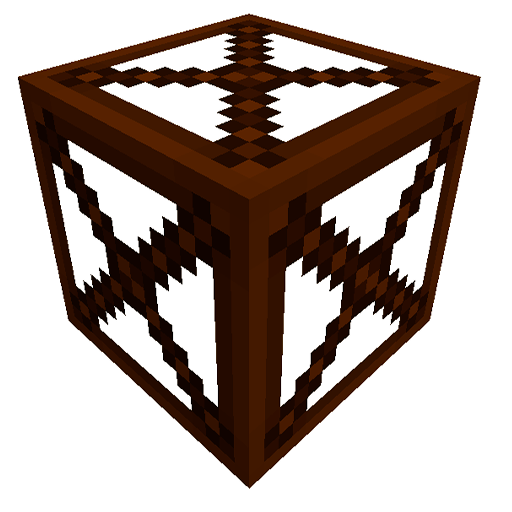

Primitive Water Pump в собранной форме
Коэффициент генерации воды:
Биомный коэффициент:
Генерации воды:
Пример генерации воды
В биоме Plains c Pump Output Hatch генерация воды будет равна:
Генерация воды = 250 * 1 = 250 L/s.
В биоме River c LV Output Hatch генерация воды будет равна:
Генерация воды = 1000 * 3 = 3000 L/s.
Калькулятор генерации воды
Для включения голограммы (подсказка при постройке) используйте Multiblock Machine Blueprint из мода TecTech, кликните им по контролеру мультиблока.
Primitive Pump Deck
Wood Frame Box